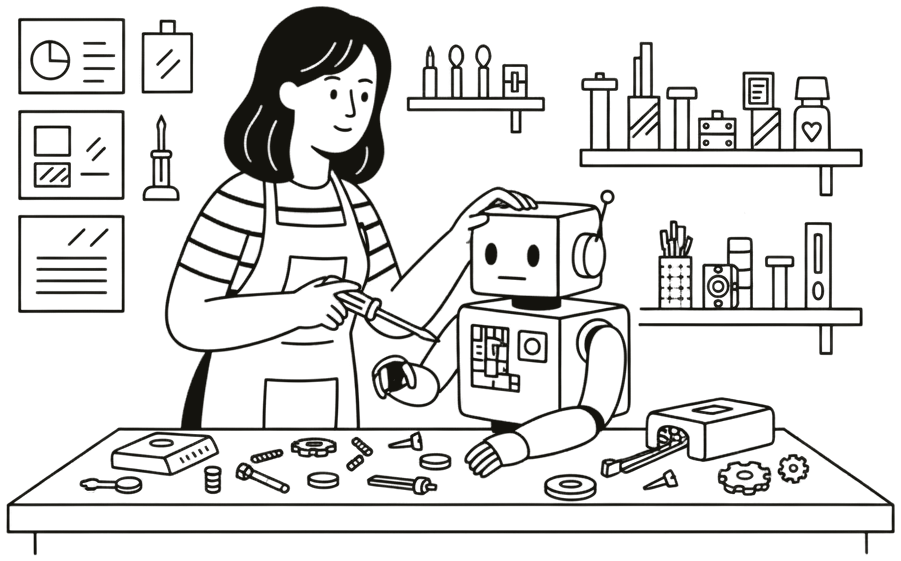

Lab 1 · Vamos resolver juntos
Hoje
Laboratório presencial
Quinta-feira, 08/10, às 18h

Secretaria Municipal de Educação
Rua General Julio Salgado, 996, Santana, Pindamonhangaba
Inteligência Artificial para Educadores
Opcional · conta 1h30 na carga horária